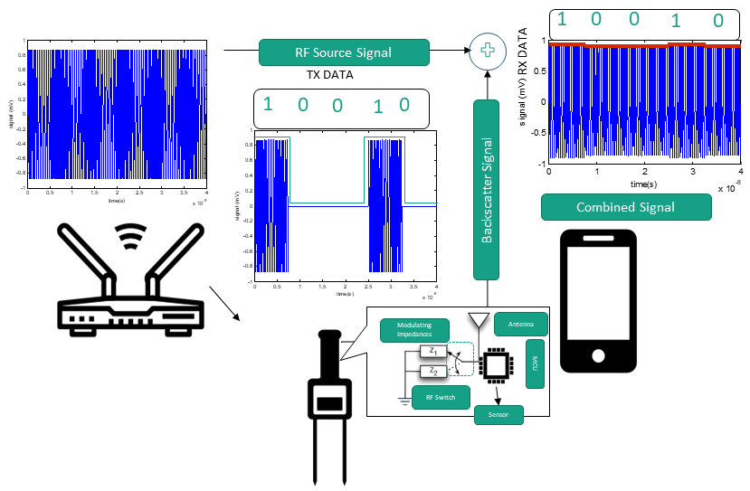

Achieving Energy Efficiency Through Backscatter
The foundation of Internet-of-Things (IoT) is based on Weiser’s vision of profound software/hardware technologies that weave themselves into the fabric of everyday life such that they become indistinguishable. The functionality and modalities of these technologies is distributed across a variety of interconnected objects. This inter-connectivity of objects is pivotal as the collective intelligence of the IoT network emerges from simple object level interactions. Ericsson's recent forecast predicts that there will 1.5 billion IoT devices with cellular connections by 2022. While cellular topology allows efficient deployment of IoT sensor nodes (SNs), connectivity to existing cellular base stations (BSs) is power hungry even with the state-of-the-art Narrowband IoT (NB-IoT) radio technology. With the massive volume of devices, it is essential to explore energy efficient (EE) SN design as recharging the deployed SNs individually on regular basis might be impractical.

Figure 1: Ambient RF Backscatter for SNs
One way to realize the EE design is to actually harvest energy from ambient RF signals and then utilize harvested energy to drive the transceiver on sensor boards. This design can be further refined by employing RF backscatter based communication which is based on the RF reflection principle. Backscatter radio achieves data transmission from SNs by modulating information onto the illuminating RF carrier signal. The RF carrier modulation is achieved by connecting an antenna to different loads which fundamentally translates into different antenna-load reflection coefficients. Backscatter radios can realize power consumption of the order of $\mu$-Watts for IoT SNs, mainly because the SN design does not require expensive analog components such as RF oscillators, mixers, crystals and decoupling capacitors etc. Interested readers are referred to a recent tutorial on Backscatter based IoT SN design in [1].
So what is this page about?
This page collates the research efforts within our research team which are currently being carried out to develop RF Backscatter powered SNs. Following videos demonstrate early proto-types for i) RF-backscatter sensor tags; ii) viability of RF power transfer for battery-free operation of Tags.
Hardware Demo for Backscatter Communication developed by ex-PhD student Dr. Ali Hayajneh
Hardware Demo for mmWave power transfer for Backscatter Tag developed by Dr. Bilal Malik & Dr. Ali Hayajneh
Talks
[1] EUSIPCO 2019 Invited Talk by S. A. Zaidi on Coverage Analysis of Backscatter Networks.[2] WiDriot 2019 presentation by A. Hayajneh & S. A. Zaidi on Coverage Analysis of UAV empowered based Bascatter Networks.
Relevant Publications
[1] B. T. Malik, V. Doychinov, A. M. Hayajneh, S. A. R. Zaidi, I. D. Robertson and N. Somjit, "Wireless Power Transfer System for Battery-Less Sensor Nodes," in IEEE Access, vol. 8, pp. 95878-95887, 2020, doi: 10.1109/ACCESS.2020.2995783.[2] A. Hayajneh, S. A. R. Zaidi, M. Hafeez, D. McLernon and M. Win, "Coverage Analysis of Drone-Assisted Backscatter Communication for IoT Sensor Network," 2019 15th International Conference on Distributed Computing in Sensor Systems (DCOSS), Santorini Island, Greece, 2019, pp. 584-590, doi: 10.1109/DCOSS.2019.00108.
[3] S. A. R. Zaidi, M. Hafeez, D. McLernon and M. Z. Win, "Coverage Analysis for Backscatter Communication Empowered Cellular Internet-of-Things : Invited Paper," 2019 27th European Signal Processing Conference (EUSIPCO), A Coruna, Spain, 2019, pp. 1-5, doi: 10.23919/EUSIPCO.2019.8902543.
[4] S. Zeb et al., "NOMA Enhanced Backscatter Communication for Green IoT Networks," 2019 16th International Symposium on Wireless Communication Systems (ISWCS), Oulu, Finland, 2019, pp. 640-644, doi: 10.1109/ISWCS.2019.8877102.
Projects
Project 1Title: UAV assisted Backscatter IoT for Dryland Irrigation in Jordan
Funding Body: Royal Academy of Enineering

Collaboration: Hashmite University Jordan
Project 2
Title:GrISt: Green Internet-of-Things for Climate Smart Agriculture
Funding Body: GCRF-QR from Research England
.png)
Collaboration: NUST and LUMS, Pakistan